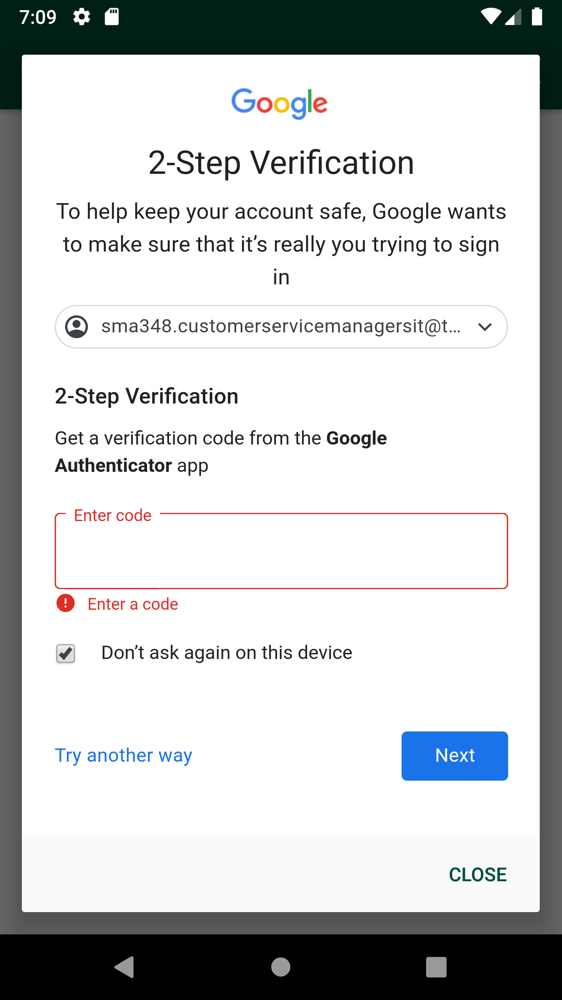
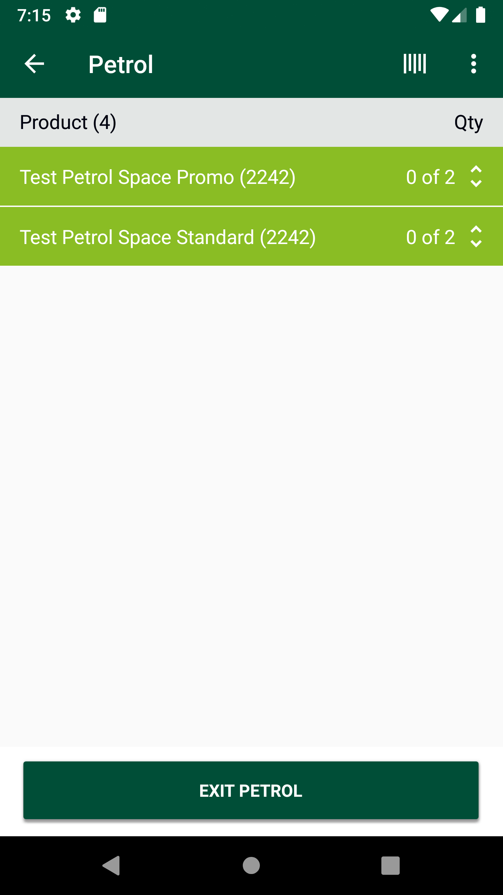
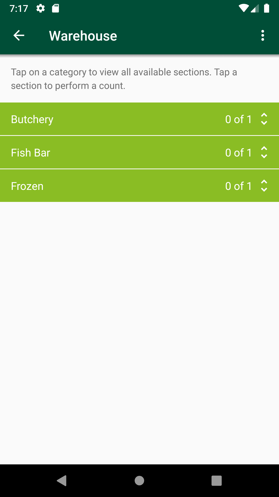
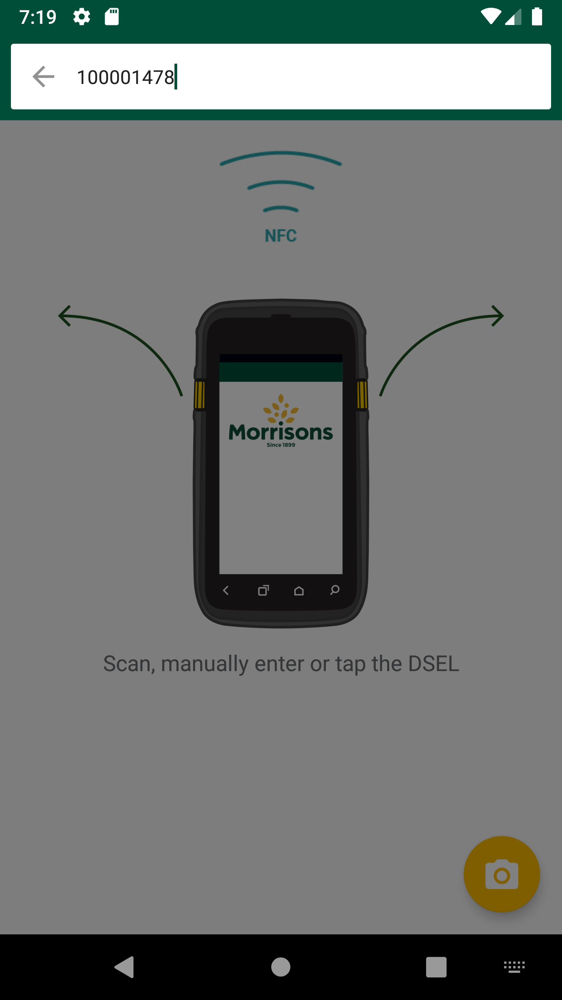
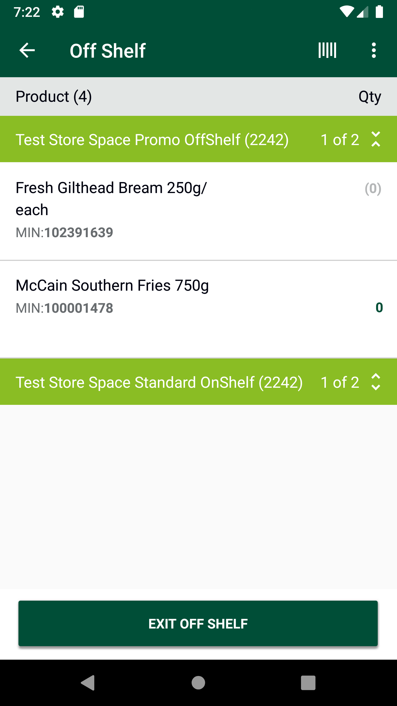
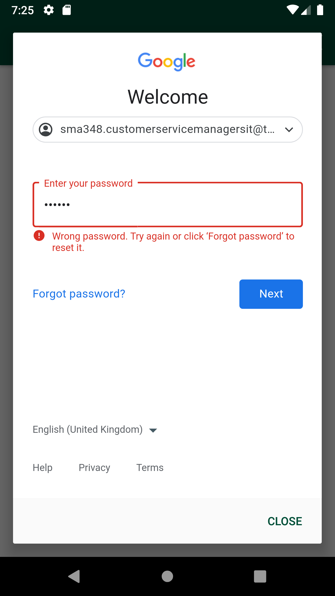
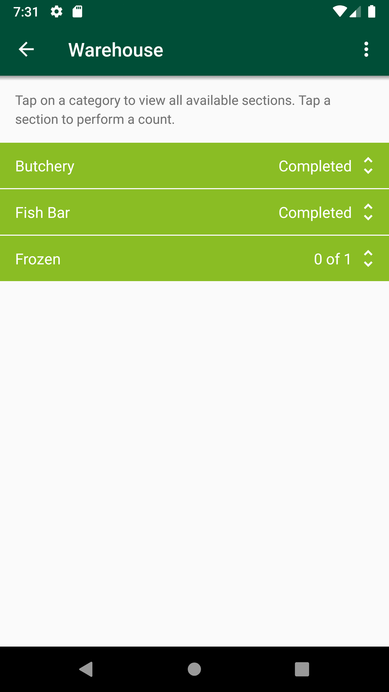

-
GLH Negative prompt scenarios
6:14:08 PM / 00:35:05:653 Fail
GLH Negative prompt scenarios
04.08.2024 6:14:08 PM 04.08.2024 6:49:13 PM 00:35:05:653 · #test-id=1@Newglh_negative_promptPassCreate SOH for itemsPassCreate SOH for itemsGiven I create SOH for the Negative Prompt "xxwmm.supplychain.freshcounts.eeeeeeeeee" "promptednegatives/pending/" "Input" "nb_prompted_count_getRunTime.dat"PassGenerate Google Access Token. This is a Pre-requisite for all Counts modulesPassGenerate Google Access Token. This is a Pre-requisite for all Counts modulesGiven request is made to capture access token and post endpoint for user v2 for "8"Then I Verify the Response Code for the following "432435" is 200And I get the field value for the field "access_token"And Get the generated Access Tocken for SMA app Login ServicePassDelete GLH Storewalk from ServicePassDelete GLH Storewalk from ServiceGiven request is made to capture access token and post endpoint for user v2 for "" Then I Verify the Response Code for the following "- " is 200
And I get the field value for the field "access_token"And Get the generated Access Tocken for SMA app Login ServiceGiven Get request is made to Get storewalks service for current dateAnd Get Operation perform on service requestThen Verify Get storewalks service response for current dateThen Delete request is made to Delete GLH storewalk for store id "8"PassTO CHANGE THE DEVICE TIMINGS AS REQUIREDPassTO CHANGE THE DEVICE TIMINGS AS REQUIREDGiven I send the time "07" and mins "00" and meridiem "am" and current date in listThen I Change timeThen I Change datePassSMA-22779_To verify API response is 201 Created in Create Walkitem API when multiple product id is passed in request body asynchronously.PassSMA-22779_To verify API response is 201 Created in Create Walkitem API when multiple product id is passed in request body asynchronously.And Get the generated Access Tocken for SMA app Login ServiceGiven Post request is made to Create storewalk for negative prompt for store id "8" and type "GapsHighsLows"And Post Operation perform on service requestThen Verify Create storewalk service responseGiven Post request is made to Create walkitem service for store id "8" and multiple product ids "100001478","102391639"And Post Operation perform on service requestThen Verify Create walkitem service response is 201PassSMA-22779_To verify multiple walkitems are created successfully in walkitem table through Create Walkitem API when 10 product is are passed at the given time for one walk_id.PassSMA-22779_To verify multiple walkitems are created successfully in walkitem table through Create Walkitem API when 10 product is are passed at the given time for one walk_id.And Get the generated Access Tocken for SMA app Login ServiceGiven Post request is made to Create storewalk for negative prompt for store id "8" and type "GapsHighsLows"And Post Operation perform on service requestThen Verify Create storewalk service responseGiven Post request is made to Multiple product Create walkitem service for store id "8" and 10 product ids "100001478","102391639","110213664","111032347","109471640","110781645","111358734","111037383","111094732","109669533"And Post Operation perform on service requestThen Verify Create walkitem service response is 201PassSMA-22779_To verify Create walkitem API through exceeded limit exception when we pass more than 10 product ids in the request body.PassSMA-22779_To verify Create walkitem API through exceeded limit exception when we pass more than 10 product ids in the request body.And Get the generated Access Tocken for SMA app Login ServiceGiven Post request is made to Create storewalk for negative prompt for store id "8" and type "GapsHighsLows"And Post Operation perform on service requestThen Verify Create storewalk service responseGiven Post request is made to Multiple product Create walkitem service for store id "8" and more than product ids "100001478","102391639","110213664","111032347","109471640","11081645","111358734","111037383","111094732","109669533","106174631"And Post Operation perform on service requestThen Verify Error message in Create walkitem service responsePassSMA-22779_To verify section is created when multiple walkitems are created using Create Walkitem API by passing multiple product id in request body.PassSMA-22779_To verify section is created when multiple walkitems are created using Create Walkitem API by passing multiple product id in request body.And Get the generated Access Tocken for SMA app Login ServiceGiven Post request is made to Create storewalk for negative prompt for store id "8" and type "GapsHighsLows"And Post Operation perform on service requestThen Verify Create storewalk service responseGiven Post request is made to Create walkitem service for store id "8" and multiple product ids "100001478","102391639"And Post Operation perform on service requestThen Verify Create walkitem service response is 201And Get request is made to Get storewalk service for store id "8"Then Get Operation perform on service requestThen Verify Get storewalk service responseAnd Get request is made to Get section service for store id "8"Then Get Operation perform on service requestAnd Verify Get section service responsePassSMA-22779_To verify whether it allows to create walkitem for different store locations if same products are already processed for other store locationPassSMA-22779_To verify whether it allows to create walkitem for different store locations if same products are already processed for other store locationAnd Get the generated Access Tocken for SMA app Login ServiceGiven Post request is made to Create storewalk for negative prompt for store id "8" and type "GapsHighsLows"And Post Operation perform on service requestThen Verify Create storewalk service responseGiven Post request is made to Multiple product Create walkitem service for store id "8" and 10 product ids "100001478","102391639","110213664","111032347","109471640","110781645","111358734","111037383","111094732","109669533"And Post Operation perform on service requestThen Verify Create walkitem service response is 201And Get the generated Access Tocken for SMA app Login ServiceGiven Post request is made to Create storewalk for negative prompt for store id "77" and type "GapsHighsLows"And Post Operation perform on service requestThen Verify Create storewalk service responseGiven Post request is made to Multiple product Create walkitem service for store id "77" and 10 product ids "100001478","102391639","110213664","111032347","109471640","110781645","111358734","111037383","111094732","109669533"And Post Operation perform on service requestThen Verify Create walkitem service response is 201PassSMA-22779_To verify create walkitem response code:400,401 with incorrect headerPassSMA-22779_To verify create walkitem response code:400,401 with incorrect headerAnd Get the generated Access Tocken for SMA app Login ServiceGiven Post request is made to Create storewalk for negative prompt for store id "8" and type "GapsHighsLows"And Post Operation perform on service requestThen Verify Create storewalk service responseGiven Post request is made to Create walkitem service for store id "8" and product id "100001478"And Post Operation perform on service request with Incorrect headerAnd Verify service response code is 400,401PassSMA-22779_To verify create walkitem response code:400,401 with incorrect access tokenPassSMA-22779_To verify create walkitem response code:400,401 with incorrect access tokenAnd Get the generated Access Tocken for SMA app Login ServiceGiven Post request is made to Create storewalk for negative prompt for store id "8" and type "GapsHighsLows"And Post Operation perform on service requestThen Verify Create storewalk service responseAnd Get Incorrect access tokenGiven Post request is made to Create walkitem service for store id "8" and product id "100001478"And Post Operation perform on service requestAnd Verify service response code is 400,401PassSMA-22779_To verify create walkitem response code:401 with blank store idPassSMA-22779_To verify create walkitem response code:401 with blank store idAnd Get the generated Access Tocken for SMA app Login ServiceGiven Post request is made to Create storewalk for negative prompt for store id "8" and type "GapsHighsLows"And Post Operation perform on service requestThen Verify Create storewalk service responseAnd Get Incorrect access tokenGiven Post request is made to Create walkitem service for store id "77" and product id "100001478"And Post Operation perform on service requestAnd Verify service response code is 401PassSMA-22779_To verify create walkitem response code:400 with blank request payloadPassSMA-22779_To verify create walkitem response code:400 with blank request payloadAnd Get the generated Access Tocken for SMA app Login ServiceGiven Post request is made to Create storewalk for negative prompt for store id "8" and type "GapsHighsLows"And Post Operation perform on service requestThen Verify Create storewalk service responseGiven Post request is made to Create walkitem service without payload for store id "8"And Post Operation perform on service requestAnd Verify service response code is 400PassSMA-22779_To verify create walkitem response code:400,401 with incorect request payloadPassSMA-22779_To verify create walkitem response code:400,401 with incorect request payloadAnd Get the generated Access Tocken for SMA app Login ServiceGiven Post request is made to Create storewalk for negative prompt for store id "8" and type "GapsHighsLows"And Post Operation perform on service requestThen Verify Create storewalk service responseGiven Post request is made to Create walkitem service with invalid payload for store id "8" and product id "100001478"And Post Operation perform on service requestAnd Verify service response code is 400PassSMA-22771_To verify the list of "Prompted Negative Products" are visible on offshelf location in AM GLH across store mobile app without any captures.PassSMA-22771_To verify the list of "Prompted Negative Products" are visible on offshelf location in AM GLH across store mobile app without any captures.When I enter Username and Password for SMA Manager userAnd I click on login button for SMAThen I click on 'stockMngmtText' on page 'HomePagePO_New'Then I click on "Shop Floor - Gap Scan"Then I click on Fixture ScanAnd I verify products list is not displayed in fixture locationThen I click on Back buttonThen I click on OffShelfAnd I verify Prompted Negative products are displayed in Offshelf locationFailSMA-22771_To verify For GLH create Items with reason as ‘NegativeStock’ to appear the records in offshelf in GLH.FailSMA-22771_To verify For GLH create Items with reason as ‘NegativeStock’ to appear the records in offshelf in GLH.When I enter Username and Password for SMA Manager userAnd I click on login button for SMAThen I click on 'stockMngmtText' on page 'HomePagePO_New'com.morrisons.common.action.Hook.afterScenario(io.cucumber.java.Scenario)
Then I click on "Shop Floor - Gap Scan"Step skippedThen I click on OffShelfStep skippedAnd I verify Prompted Negative products are displayed in Offshelf locationStep skippedAnd Get the generated Access Tocken for SMA app Login ServiceStep skippedGiven Get request is made to Get storewalks service for current dateStep skippedAnd Get Operation perform on service requestStep skippedThen Verify Get storewalks service response for current date for store id "8"Step skippedGiven Get request is made to Get storewalk service for Negative prompt product and store id "8"Step skippedAnd Get Operation perform on service requestStep skippedThen Verify Get storewalks service response for Negative prompt and store id "8"Step skippedAnd I verify GLH create Items with reason as ‘NegativeStock’ in GetStorewalks service responseStep skippedPassSMA-22771_To verify if "Prompted Negative Products" are not captured by store colleague, then status across warehouse location for respective department > section is Offshelf pending.PassSMA-22771_To verify if "Prompted Negative Products" are not captured by store colleague, then status across warehouse location for respective department > section is Offshelf pending.When I enter Username and Password for SMA Manager userAnd I click on login button for SMAThen I click on 'stockMngmtText' on page 'HomePagePO_New'Then I click on "Shop Floor - Gap Scan"Then I click on OffShelfAnd I verify Prompted Negative products are displayed in Offshelf locationThen I click on Back buttonThen I click on WareHouseAnd I verify department section status is Offshelf pendingAnd I click on Back ButtonFailSMA-22771_To verify once negative walkitems are created and displayed at offshelf location then the respective departments are also visible followed by section across Warehouse location.FailSMA-22771_To verify once negative walkitems are created and displayed at offshelf location then the respective departments are also visible followed by section across Warehouse location.When I enter Username and Password for SMA Manager userAnd I click on login button for SMAThen I click on 'stockMngmtText' on page 'HomePagePO_New'Then I click on "Shop Floor - Gap Scan"Then I click on OffShelfAnd I verify Prompted Negative products are displayed in Offshelf locationThen I get Category name from Offshelf locationThen I click on Back buttonThen I click on PetrolAnd I verify products are displayed in Petrol locationThen I get Category name from Petrol locationcom.morrisons.common.action.Hook.afterScenario(io.cucumber.java.Scenario)
Then I click on Back buttonStep skippedThen I click on WareHouseStep skippedAnd I verify products are displayed in Warehouse locationStep skippedFailSMA-22771_To verify Groups and section displayed at Warehouse location on UI matches with Get storewalk Service response.FailSMA-22771_To verify Groups and section displayed at Warehouse location on UI matches with Get storewalk Service response.When I enter Username and Password for SMA Manager userAnd I click on login button for SMAThen I click on 'stockMngmtText' on page 'HomePagePO_New'Then I click on "Shop Floor - Gap Scan"Then I click on OffShelfAnd I verify Prompted Negative products are displayed in Offshelf locationThen I click on Back buttonThen I click on WareHouseAnd I verify products are displayed in Warehouse locationThen I get Department name from Warehouse locationAnd Get the generated Access Tocken for SMA app Login ServiceGiven Get request is made to Get storewalks service for current dateAnd Get Operation perform on service requestThen Verify Get storewalks service response for current date for store id "8"Given Get request is made to Get storewalk service for store id "8"And Get Operation perform on service requestThen Verify Get storewalks service response for store id "8"com.morrisons.common.action.Hook.afterScenario(io.cucumber.java.Scenario)
And I verify Warehouse Group dept and section on UI and service matchesStep skippedFailSMA-22771_To verify user is able to capture "Prompted Negative Products" as GAP in on-shelf location then respective product is getting removed from Off shelf location.FailSMA-22771_To verify user is able to capture "Prompted Negative Products" as GAP in on-shelf location then respective product is getting removed from Off shelf location.When I enter Username and Password for SMA Manager userAnd I click on login button for SMAThen I click on 'stockMngmtText' on page 'HomePagePO_New'Then I click on "Shop Floor - Gap Scan"Then I click on OffShelfAnd I verify Prompted Negative products are displayed in Offshelf locationThen I get Category name and Min values from Offshelf locationThen I click on Back buttonThen I click on Fixture ScanAnd I click on barcode entry ButtonThen I Enter barcode number in fixture scancom.morrisons.common.action.Hook.afterScenario(io.cucumber.java.Scenario)And I click on GAP buttonStep skippedAnd I choose the plan from popup if multiple records presentStep skippedAnd I will capture the product name from view listStep skippedThen I verify the if it is GAPStep skippedThen I click on Back buttonStep skippedThen I click on OffShelfStep skippedAnd I verify Scan product in fixture is removed from offshelf locationStep skippedFailSMA-22771_To verify user is able to capture "Prompted Negative Products" as LOW in on-shelf location then respective product is getting removed from Off shelf location.FailSMA-22771_To verify user is able to capture "Prompted Negative Products" as LOW in on-shelf location then respective product is getting removed from Off shelf location.When I enter Username and Password for SMA Manager userAnd I click on login button for SMAThen I click on 'stockMngmtText' on page 'HomePagePO_New'Then I click on "Shop Floor - Gap Scan"Then I click on OffShelfAnd I verify Prompted Negative products are displayed in Offshelf locationThen I get Category name and Min values from Offshelf locationThen I click on Back buttonThen I click on Fixture ScanAnd I click on barcode entry ButtonThen I Enter barcode number in fixture scancom.morrisons.common.action.Hook.afterScenario(io.cucumber.java.Scenario)
And I click on COUNT buttonStep skippedAnd I enter quantity "" for fixture and warehouse Step skippedAnd I choose the plan from popup if multiple records presentStep skippedAnd I will capture the product name from view listStep skippedThen I verify the if it is COUNTStep skippedThen I click on Back buttonStep skippedThen I click on OffShelfStep skippedAnd I verify Scan product in fixture is removed from offshelf locationStep skippedFailSMA-22771_To verify user is able to capture "Prompted Negative Products" as HIGH in on-shelf location then respective product is getting removed from Off shelf location.FailSMA-22771_To verify user is able to capture "Prompted Negative Products" as HIGH in on-shelf location then respective product is getting removed from Off shelf location.When I enter Username and Password for SMA Manager userAnd I click on login button for SMAThen I click on 'stockMngmtText' on page 'HomePagePO_New'Then I click on "Shop Floor - Gap Scan"Then I click on OffShelfAnd I verify Prompted Negative products are displayed in Offshelf locationThen I get Category name and Min values from Offshelf locationThen I click on Back buttonThen I click on Fixture ScanAnd I click on barcode entry ButtonThen I Enter barcode number in fixture scancom.morrisons.common.action.Hook.afterScenario(io.cucumber.java.Scenario)And I click on COUNT buttonStep skippedAnd I enter quantity "" for fixture and warehouse Step skippedAnd I choose the plan from popup if multiple records presentStep skippedAnd I will capture the product name from view listStep skippedThen I verify the if it is COUNTStep skippedThen I click on Back buttonStep skippedThen I click on OffShelfStep skippedAnd I verify Scan product in fixture is removed from offshelf locationStep skippedFailSMA-22771_To verify when user scans "Prompted Negative Products" in fixture location as HIGH then respective products are excluded from the Warehouse location but empty item list should be displayed.FailSMA-22771_To verify when user scans "Prompted Negative Products" in fixture location as HIGH then respective products are excluded from the Warehouse location but empty item list should be displayed.When I enter Username and Password for SMA Manager userAnd I click on login button for SMAThen I click on 'stockMngmtText' on page 'HomePagePO_New'Then I click on "Shop Floor - Gap Scan"And Get the generated Access Tocken for SMA app Login ServiceThen I click on OffShelfAnd I verify Prompted Negative products are displayed in Offshelf locationThen I get Category name and Min values from Offshelf locationThen I click on Back buttonThen I click on Fixture ScanAnd I click on barcode entry ButtonThen I Enter barcode number in fixture scancom.morrisons.common.action.Hook.afterScenario(io.cucumber.java.Scenario)And I click on COUNT buttonStep skippedAnd I enter quantity "" for fixture and warehouse Step skippedAnd I choose the plan from popup if multiple records presentStep skippedAnd I will capture the product name from view listStep skippedThen I verify the if it is COUNTStep skippedThen I click on Back buttonStep skippedThen I click on OffShelfStep skippedAnd I verify Scan product in fixture is removed from offshelf locationStep skippedGiven Get request is made to Get storewalks service for current dateStep skippedAnd Get Operation perform on service requestStep skippedThen Verify Get storewalks service response for current date for store id "8"Step skippedGiven Get request is made to Get storewalk service for store id "8"Step skippedAnd Get Operation perform on service requestStep skippedThen Verify Get storewalks service response for store id "8"Step skippedAnd I Get Group name and product id from GetStorewalk ServiceStep skippedThen I click on Back buttonStep skippedThen I click on WareHouseStep skippedThen I Select the Group section in warehouseStep skippedThen I Verify Empty product list is displayedStep skippedFailSMA-22771_To verify user is able to set '0' quantity for prompted negative counts at Off-Shelf location.FailSMA-22771_To verify user is able to set '0' quantity for prompted negative counts at Off-Shelf location.When I enter Username and Password for SMA Manager userAnd I click on login button for SMAThen I click on 'stockMngmtText' on page 'HomePagePO_New'Then I click on "Shop Floor - Gap Scan"Then I click on OffShelfAnd I select section in offshelf locationAnd I enter quantity as "0" in offshelf locationThen I verify "0" quantity set for prompted negative counts at offshelf locationcom.morrisons.common.action.Hook.afterScenario(io.cucumber.java.Scenario)
FailSMA-22771_To verify user should not be able to delete negative "Prompted Negative Products" from Offshelf Location.FailSMA-22771_To verify user should not be able to delete negative "Prompted Negative Products" from Offshelf Location.When I enter Username and Password for SMA Manager userAnd I click on login button for SMAThen I click on 'stockMngmtText' on page 'HomePagePO_New'com.morrisons.common.action.Hook.afterScenario(io.cucumber.java.Scenario)
Then I click on "Shop Floor - Gap Scan"Step skippedThen I click on OffShelfStep skippedAnd I verify Prompted Negative products are displayed in Offshelf locationStep skippedThen I select section in offshelf locationStep skippedAnd I left swipe the product descriptionStep skippedAnd I verify product is not able to delete from Offshelf LocationStep skippedFailSMA-22771_To verify user is able to complete warehouse location for the "Prompted Negative Products".FailSMA-22771_To verify user is able to complete warehouse location for the "Prompted Negative Products".When I enter Username and Password for SMA Manager userAnd I click on login button for SMAThen I click on 'stockMngmtText' on page 'HomePagePO_New'Then I click on "Shop Floor - Gap Scan"Then I click on OffShelfAnd I verify Prompted Negative products are displayed in Offshelf locationAnd I Complete the sectionThen I verify status as CompletedAnd I click on Back ButtonThen I click on PetrolAnd I verify Prompted Negative products are displayed in Offshelf locationAnd I Complete the sectionAnd I verify status as CompletedAnd I click on Back ButtonThen I click on WareHouseAnd I Complete the warehouse sectionAnd I verify status as Completedcom.morrisons.common.action.Hook.afterScenario(io.cucumber.java.Scenario)
And I click on Back ButtonStep skipped
-
org.openqa.selenium.WebDriverException
4 tests
org.openqa.selenium.WebDriverException
4 failedStatus Timestamp TestName Fail 18:35:49 PM Then I Enter barcode number in fixture scan GLH Negative prompt scenarios.SMA-22771_To verify user is able to capture "Prompted Negative Products" as GAP in on-shelf location then respective product is getting removed from Off shelf location..Then I Enter barcode number in fixture scanFail 18:36:54 PM Then I Enter barcode number in fixture scan GLH Negative prompt scenarios.SMA-22771_To verify user is able to capture "Prompted Negative Products" as LOW in on-shelf location then respective product is getting removed from Off shelf location..Then I Enter barcode number in fixture scanFail 18:38:26 PM Then I Enter barcode number in fixture scan GLH Negative prompt scenarios.SMA-22771_To verify user is able to capture "Prompted Negative Products" as HIGH in on-shelf location then respective product is getting removed from Off shelf location..Then I Enter barcode number in fixture scanFail 18:39:38 PM Then I Enter barcode number in fixture scan GLH Negative prompt scenarios.SMA-22771_To verify when user scans "Prompted Negative Products" in fixture location as HIGH then respective products are excluded from the Warehouse location but empty item list should be displayed..Then I Enter barcode number in fixture scan -
org.openqa.selenium.NoSuchElementException
2 tests
org.openqa.selenium.NoSuchElementException
2 failedStatus Timestamp TestName Fail 18:25:56 PM Then I click on 'stockMngmtText' on page 'HomePagePO_New' GLH Negative prompt scenarios.SMA-22771_To verify For GLH create Items with reason as ‘NegativeStock’ to appear the records in offshelf in GLH..Then I click on 'stockMngmtText' on page 'HomePagePO_New'Fail 18:42:11 PM Then I click on 'stockMngmtText' on page 'HomePagePO_New' GLH Negative prompt scenarios.SMA-22771_To verify user should not be able to delete negative "Prompted Negative Products" from Offshelf Location..Then I click on 'stockMngmtText' on page 'HomePagePO_New' -
org.openqa.selenium.StaleElementReferenceException
1 tests
org.openqa.selenium.StaleElementReferenceException
1 failedStatus Timestamp TestName Fail 18:32:29 PM Then I get Category name from Petrol location GLH Negative prompt scenarios.SMA-22771_To verify once negative walkitems are created and displayed at offshelf location then the respective departments are also visible followed by section across Warehouse location..Then I get Category name from Petrol location -
java.lang.AssertionError
2 tests
java.lang.AssertionError
2 failedStatus Timestamp TestName Fail 18:40:33 PM Then I verify "0" quantity set for prompted negative counts at offshelf location GLH Negative prompt scenarios.SMA-22771_To verify user is able to set '0' quantity for prompted negative counts at Off-Shelf location..Then I verify "0" quantity set for prompted negative counts at offshelf locationFail 18:49:01 PM And I verify status as Completed GLH Negative prompt scenarios.SMA-22771_To verify user is able to complete warehouse location for the "Prompted Negative Products"..And I verify status as Completed -
java.lang.NullPointerException
1 tests
java.lang.NullPointerException
1 failedStatus Timestamp TestName Fail 18:34:51 PM Then Verify Get storewalks service response for store id "8" GLH Negative prompt scenarios.SMA-22771_To verify Groups and section displayed at Warehouse location on UI matches with Get storewalk Service response..Then Verify Get storewalks service response for store id "8"
-
@ds1
2 tests
@ds1
2 passedStatus Timestamp TestName Pass 18:14:30 PM Generate Google Access Token. This is a Pre-requisite for all Counts modules GLH Negative prompt scenarios.Generate Google Access Token. This is a Pre-requisite for all Counts modulesPass 18:14:30 PM Generate Google Access Token. This is a Pre-requisite for all Counts modules GLH Negative prompt scenarios.Generate Google Access Token. This is a Pre-requisite for all Counts modules -
@timeChange
2 tests
@timeChange
2 passedStatus Timestamp TestName Pass 18:16:11 PM TO CHANGE THE DEVICE TIMINGS AS REQUIRED GLH Negative prompt scenarios.TO CHANGE THE DEVICE TIMINGS AS REQUIREDPass 18:16:11 PM TO CHANGE THE DEVICE TIMINGS AS REQUIRED GLH Negative prompt scenarios.TO CHANGE THE DEVICE TIMINGS AS REQUIRED -
@sma
50 tests
@sma
30 passed 20 failedStatus Timestamp TestName Pass 18:14:08 PM Create SOH for items GLH Negative prompt scenarios.Create SOH for itemsPass 18:14:08 PM Create SOH for items GLH Negative prompt scenarios.Create SOH for itemsPass 18:14:30 PM Generate Google Access Token. This is a Pre-requisite for all Counts modules GLH Negative prompt scenarios.Generate Google Access Token. This is a Pre-requisite for all Counts modulesPass 18:14:30 PM Generate Google Access Token. This is a Pre-requisite for all Counts modules GLH Negative prompt scenarios.Generate Google Access Token. This is a Pre-requisite for all Counts modulesPass 18:15:21 PM Delete GLH Storewalk from Service GLH Negative prompt scenarios.Delete GLH Storewalk from ServicePass 18:15:21 PM Delete GLH Storewalk from Service GLH Negative prompt scenarios.Delete GLH Storewalk from ServicePass 18:18:14 PM SMA-22779_To verify API response is 201 Created in Create Walkitem API when multiple product id is passed in request body asynchronously. GLH Negative prompt scenarios.SMA-22779_To verify API response is 201 Created in Create Walkitem API when multiple product id is passed in request body asynchronously.Pass 18:18:14 PM SMA-22779_To verify API response is 201 Created in Create Walkitem API when multiple product id is passed in request body asynchronously. GLH Negative prompt scenarios.SMA-22779_To verify API response is 201 Created in Create Walkitem API when multiple product id is passed in request body asynchronously.Pass 18:18:31 PM SMA-22779_To verify multiple walkitems are created successfully in walkitem table through Create Walkitem API when 10 product is are passed at the given time for one walk_id. GLH Negative prompt scenarios.SMA-22779_To verify multiple walkitems are created successfully in walkitem table through Create Walkitem API when 10 product is are passed at the given time for one walk_id.Pass 18:18:31 PM SMA-22779_To verify multiple walkitems are created successfully in walkitem table through Create Walkitem API when 10 product is are passed at the given time for one walk_id. GLH Negative prompt scenarios.SMA-22779_To verify multiple walkitems are created successfully in walkitem table through Create Walkitem API when 10 product is are passed at the given time for one walk_id.Pass 18:18:47 PM SMA-22779_To verify Create walkitem API through exceeded limit exception when we pass more than 10 product ids in the request body. GLH Negative prompt scenarios.SMA-22779_To verify Create walkitem API through exceeded limit exception when we pass more than 10 product ids in the request body.Pass 18:18:47 PM SMA-22779_To verify Create walkitem API through exceeded limit exception when we pass more than 10 product ids in the request body. GLH Negative prompt scenarios.SMA-22779_To verify Create walkitem API through exceeded limit exception when we pass more than 10 product ids in the request body.Pass 18:20:02 PM SMA-22779_To verify section is created when multiple walkitems are created using Create Walkitem API by passing multiple product id in request body. GLH Negative prompt scenarios.SMA-22779_To verify section is created when multiple walkitems are created using Create Walkitem API by passing multiple product id in request body.Pass 18:20:02 PM SMA-22779_To verify section is created when multiple walkitems are created using Create Walkitem API by passing multiple product id in request body. GLH Negative prompt scenarios.SMA-22779_To verify section is created when multiple walkitems are created using Create Walkitem API by passing multiple product id in request body.Pass 18:20:19 PM SMA-22779_To verify whether it allows to create walkitem for different store locations if same products are already processed for other store location GLH Negative prompt scenarios.SMA-22779_To verify whether it allows to create walkitem for different store locations if same products are already processed for other store locationPass 18:20:19 PM SMA-22779_To verify whether it allows to create walkitem for different store locations if same products are already processed for other store location GLH Negative prompt scenarios.SMA-22779_To verify whether it allows to create walkitem for different store locations if same products are already processed for other store locationPass 18:20:37 PM SMA-22779_To verify create walkitem response code:400,401 with incorrect header GLH Negative prompt scenarios.SMA-22779_To verify create walkitem response code:400,401 with incorrect headerPass 18:20:37 PM SMA-22779_To verify create walkitem response code:400,401 with incorrect header GLH Negative prompt scenarios.SMA-22779_To verify create walkitem response code:400,401 with incorrect headerPass 18:20:53 PM SMA-22779_To verify create walkitem response code:400,401 with incorrect access token GLH Negative prompt scenarios.SMA-22779_To verify create walkitem response code:400,401 with incorrect access tokenPass 18:20:53 PM SMA-22779_To verify create walkitem response code:400,401 with incorrect access token GLH Negative prompt scenarios.SMA-22779_To verify create walkitem response code:400,401 with incorrect access tokenPass 18:21:47 PM SMA-22779_To verify create walkitem response code:401 with blank store id GLH Negative prompt scenarios.SMA-22779_To verify create walkitem response code:401 with blank store idPass 18:21:47 PM SMA-22779_To verify create walkitem response code:401 with blank store id GLH Negative prompt scenarios.SMA-22779_To verify create walkitem response code:401 with blank store idPass 18:22:02 PM SMA-22779_To verify create walkitem response code:400 with blank request payload GLH Negative prompt scenarios.SMA-22779_To verify create walkitem response code:400 with blank request payloadPass 18:22:02 PM SMA-22779_To verify create walkitem response code:400 with blank request payload GLH Negative prompt scenarios.SMA-22779_To verify create walkitem response code:400 with blank request payloadPass 18:22:17 PM SMA-22779_To verify create walkitem response code:400,401 with incorect request payload GLH Negative prompt scenarios.SMA-22779_To verify create walkitem response code:400,401 with incorect request payloadPass 18:22:17 PM SMA-22779_To verify create walkitem response code:400,401 with incorect request payload GLH Negative prompt scenarios.SMA-22779_To verify create walkitem response code:400,401 with incorect request payloadPass 18:22:33 PM SMA-22771_To verify the list of "Prompted Negative Products" are visible on offshelf location in AM GLH across store mobile app without any captures. GLH Negative prompt scenarios.SMA-22771_To verify the list of "Prompted Negative Products" are visible on offshelf location in AM GLH across store mobile app without any captures.Pass 18:22:33 PM SMA-22771_To verify the list of "Prompted Negative Products" are visible on offshelf location in AM GLH across store mobile app without any captures. GLH Negative prompt scenarios.SMA-22771_To verify the list of "Prompted Negative Products" are visible on offshelf location in AM GLH across store mobile app without any captures.Fail 18:24:42 PM SMA-22771_To verify For GLH create Items with reason as ‘NegativeStock’ to appear the records in offshelf in GLH. GLH Negative prompt scenarios.SMA-22771_To verify For GLH create Items with reason as ‘NegativeStock’ to appear the records in offshelf in GLH.Fail 18:24:42 PM SMA-22771_To verify For GLH create Items with reason as ‘NegativeStock’ to appear the records in offshelf in GLH. GLH Negative prompt scenarios.SMA-22771_To verify For GLH create Items with reason as ‘NegativeStock’ to appear the records in offshelf in GLH.Pass 18:27:34 PM SMA-22771_To verify if "Prompted Negative Products" are not captured by store colleague, then status across warehouse location for respective department > section is Offshelf pending. GLH Negative prompt scenarios.SMA-22771_To verify if "Prompted Negative Products" are not captured by store colleague, then status across warehouse location for respective department > section is Offshelf pending.Pass 18:27:34 PM SMA-22771_To verify if "Prompted Negative Products" are not captured by store colleague, then status across warehouse location for respective department > section is Offshelf pending. GLH Negative prompt scenarios.SMA-22771_To verify if "Prompted Negative Products" are not captured by store colleague, then status across warehouse location for respective department > section is Offshelf pending.Fail 18:30:16 PM SMA-22771_To verify once negative walkitems are created and displayed at offshelf location then the respective departments are also visible followed by section across Warehouse location. GLH Negative prompt scenarios.SMA-22771_To verify once negative walkitems are created and displayed at offshelf location then the respective departments are also visible followed by section across Warehouse location.Fail 18:30:16 PM SMA-22771_To verify once negative walkitems are created and displayed at offshelf location then the respective departments are also visible followed by section across Warehouse location. GLH Negative prompt scenarios.SMA-22771_To verify once negative walkitems are created and displayed at offshelf location then the respective departments are also visible followed by section across Warehouse location.Fail 18:32:52 PM SMA-22771_To verify Groups and section displayed at Warehouse location on UI matches with Get storewalk Service response. GLH Negative prompt scenarios.SMA-22771_To verify Groups and section displayed at Warehouse location on UI matches with Get storewalk Service response.Fail 18:32:52 PM SMA-22771_To verify Groups and section displayed at Warehouse location on UI matches with Get storewalk Service response. GLH Negative prompt scenarios.SMA-22771_To verify Groups and section displayed at Warehouse location on UI matches with Get storewalk Service response.Fail 18:34:52 PM SMA-22771_To verify user is able to capture "Prompted Negative Products" as GAP in on-shelf location then respective product is getting removed from Off shelf location. GLH Negative prompt scenarios.SMA-22771_To verify user is able to capture "Prompted Negative Products" as GAP in on-shelf location then respective product is getting removed from Off shelf location.Fail 18:34:52 PM SMA-22771_To verify user is able to capture "Prompted Negative Products" as GAP in on-shelf location then respective product is getting removed from Off shelf location. GLH Negative prompt scenarios.SMA-22771_To verify user is able to capture "Prompted Negative Products" as GAP in on-shelf location then respective product is getting removed from Off shelf location.Fail 18:35:57 PM SMA-22771_To verify user is able to capture "Prompted Negative Products" as LOW in on-shelf location then respective product is getting removed from Off shelf location. GLH Negative prompt scenarios.SMA-22771_To verify user is able to capture "Prompted Negative Products" as LOW in on-shelf location then respective product is getting removed from Off shelf location.Fail 18:35:57 PM SMA-22771_To verify user is able to capture "Prompted Negative Products" as LOW in on-shelf location then respective product is getting removed from Off shelf location. GLH Negative prompt scenarios.SMA-22771_To verify user is able to capture "Prompted Negative Products" as LOW in on-shelf location then respective product is getting removed from Off shelf location.Fail 18:37:02 PM SMA-22771_To verify user is able to capture "Prompted Negative Products" as HIGH in on-shelf location then respective product is getting removed from Off shelf location. GLH Negative prompt scenarios.SMA-22771_To verify user is able to capture "Prompted Negative Products" as HIGH in on-shelf location then respective product is getting removed from Off shelf location.Fail 18:37:02 PM SMA-22771_To verify user is able to capture "Prompted Negative Products" as HIGH in on-shelf location then respective product is getting removed from Off shelf location. GLH Negative prompt scenarios.SMA-22771_To verify user is able to capture "Prompted Negative Products" as HIGH in on-shelf location then respective product is getting removed from Off shelf location.Fail 18:38:34 PM SMA-22771_To verify when user scans "Prompted Negative Products" in fixture location as HIGH then respective products are excluded from the Warehouse location but empty item list should be displayed. GLH Negative prompt scenarios.SMA-22771_To verify when user scans "Prompted Negative Products" in fixture location as HIGH then respective products are excluded from the Warehouse location but empty item list should be displayed.Fail 18:38:34 PM SMA-22771_To verify when user scans "Prompted Negative Products" in fixture location as HIGH then respective products are excluded from the Warehouse location but empty item list should be displayed. GLH Negative prompt scenarios.SMA-22771_To verify when user scans "Prompted Negative Products" in fixture location as HIGH then respective products are excluded from the Warehouse location but empty item list should be displayed.Fail 18:39:46 PM SMA-22771_To verify user is able to set '0' quantity for prompted negative counts at Off-Shelf location. GLH Negative prompt scenarios.SMA-22771_To verify user is able to set '0' quantity for prompted negative counts at Off-Shelf location.Fail 18:39:46 PM SMA-22771_To verify user is able to set '0' quantity for prompted negative counts at Off-Shelf location. GLH Negative prompt scenarios.SMA-22771_To verify user is able to set '0' quantity for prompted negative counts at Off-Shelf location.Fail 18:40:35 PM SMA-22771_To verify user should not be able to delete negative "Prompted Negative Products" from Offshelf Location. GLH Negative prompt scenarios.SMA-22771_To verify user should not be able to delete negative "Prompted Negative Products" from Offshelf Location.Fail 18:40:35 PM SMA-22771_To verify user should not be able to delete negative "Prompted Negative Products" from Offshelf Location. GLH Negative prompt scenarios.SMA-22771_To verify user should not be able to delete negative "Prompted Negative Products" from Offshelf Location.Fail 18:43:13 PM SMA-22771_To verify user is able to complete warehouse location for the "Prompted Negative Products". GLH Negative prompt scenarios.SMA-22771_To verify user is able to complete warehouse location for the "Prompted Negative Products".Fail 18:43:13 PM SMA-22771_To verify user is able to complete warehouse location for the "Prompted Negative Products". GLH Negative prompt scenarios.SMA-22771_To verify user is able to complete warehouse location for the "Prompted Negative Products". -
@NPonOffShelf
2 tests
@NPonOffShelf
2 passedStatus Timestamp TestName Pass 18:22:33 PM SMA-22771_To verify the list of "Prompted Negative Products" are visible on offshelf location in AM GLH across store mobile app without any captures. GLH Negative prompt scenarios.SMA-22771_To verify the list of "Prompted Negative Products" are visible on offshelf location in AM GLH across store mobile app without any captures.Pass 18:22:33 PM SMA-22771_To verify the list of "Prompted Negative Products" are visible on offshelf location in AM GLH across store mobile app without any captures. GLH Negative prompt scenarios.SMA-22771_To verify the list of "Prompted Negative Products" are visible on offshelf location in AM GLH across store mobile app without any captures. -
@wwq
2 tests
@wwq
2 passedStatus Timestamp TestName Pass 18:14:08 PM Create SOH for items GLH Negative prompt scenarios.Create SOH for itemsPass 18:14:08 PM Create SOH for items GLH Negative prompt scenarios.Create SOH for items -
@CreateCaptureAPI
2 tests
@CreateCaptureAPI
2 passedStatus Timestamp TestName Pass 18:15:21 PM Delete GLH Storewalk from Service GLH Negative prompt scenarios.Delete GLH Storewalk from ServicePass 18:15:21 PM Delete GLH Storewalk from Service GLH Negative prompt scenarios.Delete GLH Storewalk from Service -
@MultipleWalkitemscreated
2 tests
@MultipleWalkitemscreated
2 passedStatus Timestamp TestName Pass 18:20:02 PM SMA-22779_To verify section is created when multiple walkitems are created using Create Walkitem API by passing multiple product id in request body. GLH Negative prompt scenarios.SMA-22779_To verify section is created when multiple walkitems are created using Create Walkitem API by passing multiple product id in request body.Pass 18:20:02 PM SMA-22779_To verify section is created when multiple walkitems are created using Create Walkitem API by passing multiple product id in request body. GLH Negative prompt scenarios.SMA-22779_To verify section is created when multiple walkitems are created using Create Walkitem API by passing multiple product id in request body. -
@Newglh_negative_prompt
27 tests
@Newglh_negative_prompt
16 passed 11 failedStatus Timestamp TestName Fail 18:14:08 PM GLH Negative prompt scenarios Pass 18:14:08 PM Create SOH for items GLH Negative prompt scenarios.Create SOH for itemsPass 18:14:30 PM Generate Google Access Token. This is a Pre-requisite for all Counts modules GLH Negative prompt scenarios.Generate Google Access Token. This is a Pre-requisite for all Counts modulesPass 18:15:21 PM Delete GLH Storewalk from Service GLH Negative prompt scenarios.Delete GLH Storewalk from ServicePass 18:16:11 PM TO CHANGE THE DEVICE TIMINGS AS REQUIRED GLH Negative prompt scenarios.TO CHANGE THE DEVICE TIMINGS AS REQUIREDPass 18:18:14 PM SMA-22779_To verify API response is 201 Created in Create Walkitem API when multiple product id is passed in request body asynchronously. GLH Negative prompt scenarios.SMA-22779_To verify API response is 201 Created in Create Walkitem API when multiple product id is passed in request body asynchronously.Pass 18:18:31 PM SMA-22779_To verify multiple walkitems are created successfully in walkitem table through Create Walkitem API when 10 product is are passed at the given time for one walk_id. GLH Negative prompt scenarios.SMA-22779_To verify multiple walkitems are created successfully in walkitem table through Create Walkitem API when 10 product is are passed at the given time for one walk_id.Pass 18:18:47 PM SMA-22779_To verify Create walkitem API through exceeded limit exception when we pass more than 10 product ids in the request body. GLH Negative prompt scenarios.SMA-22779_To verify Create walkitem API through exceeded limit exception when we pass more than 10 product ids in the request body.Pass 18:20:02 PM SMA-22779_To verify section is created when multiple walkitems are created using Create Walkitem API by passing multiple product id in request body. GLH Negative prompt scenarios.SMA-22779_To verify section is created when multiple walkitems are created using Create Walkitem API by passing multiple product id in request body.Pass 18:20:19 PM SMA-22779_To verify whether it allows to create walkitem for different store locations if same products are already processed for other store location GLH Negative prompt scenarios.SMA-22779_To verify whether it allows to create walkitem for different store locations if same products are already processed for other store locationPass 18:20:37 PM SMA-22779_To verify create walkitem response code:400,401 with incorrect header GLH Negative prompt scenarios.SMA-22779_To verify create walkitem response code:400,401 with incorrect headerPass 18:20:53 PM SMA-22779_To verify create walkitem response code:400,401 with incorrect access token GLH Negative prompt scenarios.SMA-22779_To verify create walkitem response code:400,401 with incorrect access tokenPass 18:21:47 PM SMA-22779_To verify create walkitem response code:401 with blank store id GLH Negative prompt scenarios.SMA-22779_To verify create walkitem response code:401 with blank store idPass 18:22:02 PM SMA-22779_To verify create walkitem response code:400 with blank request payload GLH Negative prompt scenarios.SMA-22779_To verify create walkitem response code:400 with blank request payloadPass 18:22:17 PM SMA-22779_To verify create walkitem response code:400,401 with incorect request payload GLH Negative prompt scenarios.SMA-22779_To verify create walkitem response code:400,401 with incorect request payloadPass 18:22:33 PM SMA-22771_To verify the list of "Prompted Negative Products" are visible on offshelf location in AM GLH across store mobile app without any captures. GLH Negative prompt scenarios.SMA-22771_To verify the list of "Prompted Negative Products" are visible on offshelf location in AM GLH across store mobile app without any captures.Fail 18:24:42 PM SMA-22771_To verify For GLH create Items with reason as ‘NegativeStock’ to appear the records in offshelf in GLH. GLH Negative prompt scenarios.SMA-22771_To verify For GLH create Items with reason as ‘NegativeStock’ to appear the records in offshelf in GLH.Pass 18:27:34 PM SMA-22771_To verify if "Prompted Negative Products" are not captured by store colleague, then status across warehouse location for respective department > section is Offshelf pending. GLH Negative prompt scenarios.SMA-22771_To verify if "Prompted Negative Products" are not captured by store colleague, then status across warehouse location for respective department > section is Offshelf pending.Fail 18:30:16 PM SMA-22771_To verify once negative walkitems are created and displayed at offshelf location then the respective departments are also visible followed by section across Warehouse location. GLH Negative prompt scenarios.SMA-22771_To verify once negative walkitems are created and displayed at offshelf location then the respective departments are also visible followed by section across Warehouse location.Fail 18:32:52 PM SMA-22771_To verify Groups and section displayed at Warehouse location on UI matches with Get storewalk Service response. GLH Negative prompt scenarios.SMA-22771_To verify Groups and section displayed at Warehouse location on UI matches with Get storewalk Service response.Fail 18:34:52 PM SMA-22771_To verify user is able to capture "Prompted Negative Products" as GAP in on-shelf location then respective product is getting removed from Off shelf location. GLH Negative prompt scenarios.SMA-22771_To verify user is able to capture "Prompted Negative Products" as GAP in on-shelf location then respective product is getting removed from Off shelf location.Fail 18:35:57 PM SMA-22771_To verify user is able to capture "Prompted Negative Products" as LOW in on-shelf location then respective product is getting removed from Off shelf location. GLH Negative prompt scenarios.SMA-22771_To verify user is able to capture "Prompted Negative Products" as LOW in on-shelf location then respective product is getting removed from Off shelf location.Fail 18:37:02 PM SMA-22771_To verify user is able to capture "Prompted Negative Products" as HIGH in on-shelf location then respective product is getting removed from Off shelf location. GLH Negative prompt scenarios.SMA-22771_To verify user is able to capture "Prompted Negative Products" as HIGH in on-shelf location then respective product is getting removed from Off shelf location.Fail 18:38:34 PM SMA-22771_To verify when user scans "Prompted Negative Products" in fixture location as HIGH then respective products are excluded from the Warehouse location but empty item list should be displayed. GLH Negative prompt scenarios.SMA-22771_To verify when user scans "Prompted Negative Products" in fixture location as HIGH then respective products are excluded from the Warehouse location but empty item list should be displayed.Fail 18:39:46 PM SMA-22771_To verify user is able to set '0' quantity for prompted negative counts at Off-Shelf location. GLH Negative prompt scenarios.SMA-22771_To verify user is able to set '0' quantity for prompted negative counts at Off-Shelf location.Fail 18:40:35 PM SMA-22771_To verify user should not be able to delete negative "Prompted Negative Products" from Offshelf Location. GLH Negative prompt scenarios.SMA-22771_To verify user should not be able to delete negative "Prompted Negative Products" from Offshelf Location.Fail 18:43:13 PM SMA-22771_To verify user is able to complete warehouse location for the "Prompted Negative Products". GLH Negative prompt scenarios.SMA-22771_To verify user is able to complete warehouse location for the "Prompted Negative Products".
Started
Apr 8, 2024 06:14:03 PM
Ended
Apr 8, 2024 06:49:15 PM
Features Passed
0
Features Failed
1
Features
Scenarios
Steps
Timeline
Tags
| Name | Passed | Failed | Skipped | Others | Passed % |
|---|---|---|---|---|---|
| @ds1 | 2 | 0 | 0 | 0 | 100% |
| @timeChange | 2 | 0 | 0 | 0 | 100% |
| @sma | 30 | 20 | 0 | 0 | 60% |
| @NPonOffShelf | 2 | 0 | 0 | 0 | 100% |
| @wwq | 2 | 0 | 0 | 0 | 100% |
| @CreateCaptureAPI | 2 | 0 | 0 | 0 | 100% |
| @MultipleWalkitemscreated | 2 | 0 | 0 | 0 | 100% |
| @Newglh_negative_prompt | 16 | 11 | 0 | 0 | 59.259% |